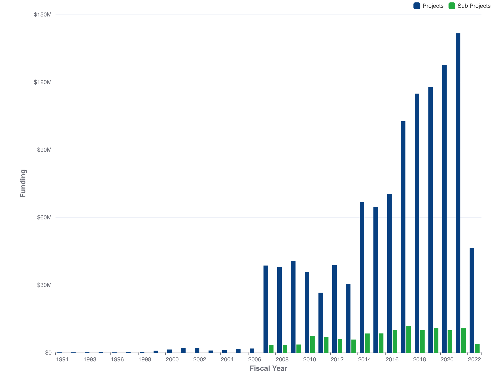

Lecture 01
Course and Bayesian Analysis Introduction
Educational Statistics and Research Methods
Today’s Lecture Objectives
- Introduce myself
- Syllabus
- Extra Course Information
- Introduce Bayesian Analysis
but, before we begin…
Introduce myself
Let me introduce myself first…


Syllabus
Course Time
Monday 5PM to 7:45PM:
5PM to 6:15PM: First half class
6:15PM to 6:30PM: 15-min break
6:30PM to 7:45PM: Second half class
Office Hours
Tuesday 1:30PM to 4:30PM
You should be able to find me in GRAD Room 109
Materials
- I will provide R codes and slides at the weekends before next class. You may download them on Blackboard or My website (jihongzhang.org)
Quiz: What is Bayesian?
- How to Pronounce Bayesian (Real Life Examples!)
- “B-Asian” or “Bayes-ian”?
- What “Bayesian” mean? Assign probabilities to everything!
- Frequentist vs Bayesian
- Example: In U.S., more Male Asian Faculty or Female Asian Faculty?
- Frequentist: If “Male:Female = 1:1 out of Asian Faculty” is fixed, how is the probability that the data happens?
- Bayesian: If I believe Male:Female = 1:2 but the data says 1:1, to what degree I need to update my mind?
- Example: In U.S., more Male Asian Faculty or Female Asian Faculty?
Bayesian Model Components
- What we see: Observed Data
- What we cannot see: Future Data, Data yet to be collected, Parameters
Take home Note I: Everything is random in Bayesian!
- Observed Data: Some random information given a unknown generation process
- Parameter: The random components controlling the generation process
Take home Note II: Every random component can be expressed as probability!
- The probability of observed data given parameters: \(p(\text{Observed Data}|\text{Parameters})\) = Likelihood
- The probability of parameters: \(p(\text{Parameters})\) = Prior Distribution
- The probability of parameters given observed data: \(p(\text{Parameters}|\text{Observed Data})\) = Posterior Distribution*
Bayesian Thinking Process
A toy example:
<<<<<<< HEAD:posts/2024-01-12-syllabus-adv-multivariate-esrm-6553/Lecture01/Lecture01.qmd I originally thought the ratio of male Asian faculty to female is about 1:2 (Prior). But the data we sampled from 2000 doctoral students suggested gender ratio is 1:1 (Data; Likelihood that the true ratio we don’t know). Based on Bayes’s rule, estimate for the ratio is probably 1:1.5 (Posterior) after combining these two statements. ======= I originally thought the ratio of male Asian faculty to female is about 1:2 (Prior). We obtained the information from 2000 doctoral candidates suggested gender ratio is 1:1 (Data; Likelihood give the true ratio we don’t know). Based on Bayes’s rule, estimate for the ratio is probably 1:1.5 (Posterior) after combining these two statements. >>>>>>> 6e75efe (update 2024 CV):posts/2024-01-12-syllabus-adv-multivariate-esrm-6554/Lecture01/Lecture01.qmd
Bayesian Analysis: Why It Is Used?
There are at least four main reasons why people use Bayesian Analysis:
- Missing data
- Multiple imputation
- More complicated model for certain types of missing data
- Lack of software capable of handing large sized analyses
- Have a zero-inflated Poisson model with 1000 observations and 1000 parameters? No problem in Bayesian!
Bayesian Analysis: Why It Is Used? (Cont.)
- New complex models not available in frequentist framework
- Have a new model? (A model that estimates the probability students choose the right answers then choose the wrong answers in a multiple choice test?)
- Enjoy the Bayesian thinking process
- It is a way of thinking that everything is random and everything can be expressed as probability. It is a way of thinking that we can update our belief as we collect more data. It is a way of thinking that we can use our prior knowledge to help us understand the data.
Bayesian Analysis: Why It Is Used? (Cont.)

Bayesian Analysis: Issues
- Subjective vs. Objective
- Prior distribution is subjective. It is based on your prior knowledge.
- However, 1) Scientific judgement is always subjective 2) you can use objective prior distribution to avoid this issue.
- Computationally Intensive
- It is not a problem anymore. We have computers.
- But we still need weeks or months to get results for some complated model and big data
- Difficult to understand
Bayesian Analysis is popular
<<<<<<< HEAD:posts/2024-01-12-syllabus-adv-multivariate-esrm-6553/Lecture01/Lecture01.qmd 
What topics Bayesian Analysis can cover?


What topics Bayesian Analysis can cover?

Funding available only for NIH, CDC, FDA, AHRQ, and ACF 2020 Spring. Source: https://report.nih.gov/
Wrapping Up
- We know what is “Bayesian” and its components.
- Why Bayesian Estimation is different from other estimation, say maximum likelihood
- We also know that Bayesian analysis is popular in many fields, especially complex data >>>>>>> 6e75efe (update 2024 CV):posts/2024-01-12-syllabus-adv-multivariate-esrm-6554/Lecture01/Lecture01.qmd
Next Class
We will talk about how Bayesian methods works in a little bit more technical way.
Suggestions
Your opinions are very important to me. Feel free to let me know if you have any suggestions on the course.